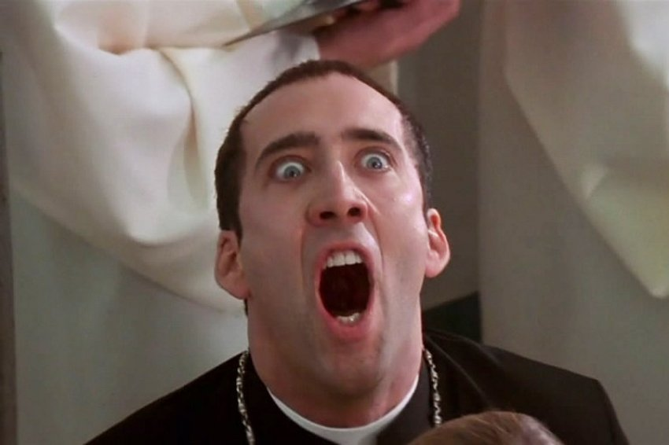

Нíколас Кейдж (англ. Nicolas Cage), ім'я при народженні — Ніколас Кім Коппола (англ. Nicolas Kim Coppola; нар. 7 січня 1964) — американський актор.
Народився 7 січня 1964 у Каліфорнії.
Змалку вирішив присвятити життя акторству — і заради театру кинув школу. У 16 років уперше з'явився на телеекрані, а в 17 почав зніматися в кіно (у титрах як Nicolas Coppola).
Свої перші помітні ролі виконав у картинах дядька Френсіса «Бійцівська рибка» (1983), «Коттон-клуб» (1984) та «Пеггі Сью вийшла заміж» (1986).
На лауреата премії Кіноакадемії відразу звернули увагу продюсери. Актору почали платити 20-мільйонні гонорари за зйомки у високобюджетних бойовиках, які мали великий успіх у публіки: «Скеля» Майкла Бея (134 млн доларів у прокаті США), «Повітряна в'язниця» Саймона Веста (101 млн доларів), «Без обличчя» Джона Ву (112 млн доларів), «Викрасти за 60 секунд» Домініка Сена (101 млн доларів). Образи, створені Кейджем у цих хітах, не виходили за межі амплуа героя «екшн» (за винятком «подвійної» позитивно-негативної ролі у «Без обличчя»).
2005 року на екрани вийшов фільм Збройний барон, у якому актор зіграв роль продавця зброї, його брата зіграв Джаред Лето. У 2007 році Кейдж зіграв у продовженні пригодницького бойовика «Скарб нації: книга таємниць» режисера Джона Тартелтауба.
У 2005 році Ніколас Кейдж зіграв головну роль Юрія Орлова, збройного торгівця родом з Одеси, Україна у фільмі Збройний барон. У стрічці багаторазово згадується Україна.
Дуже багато... :)
 На початок На головну